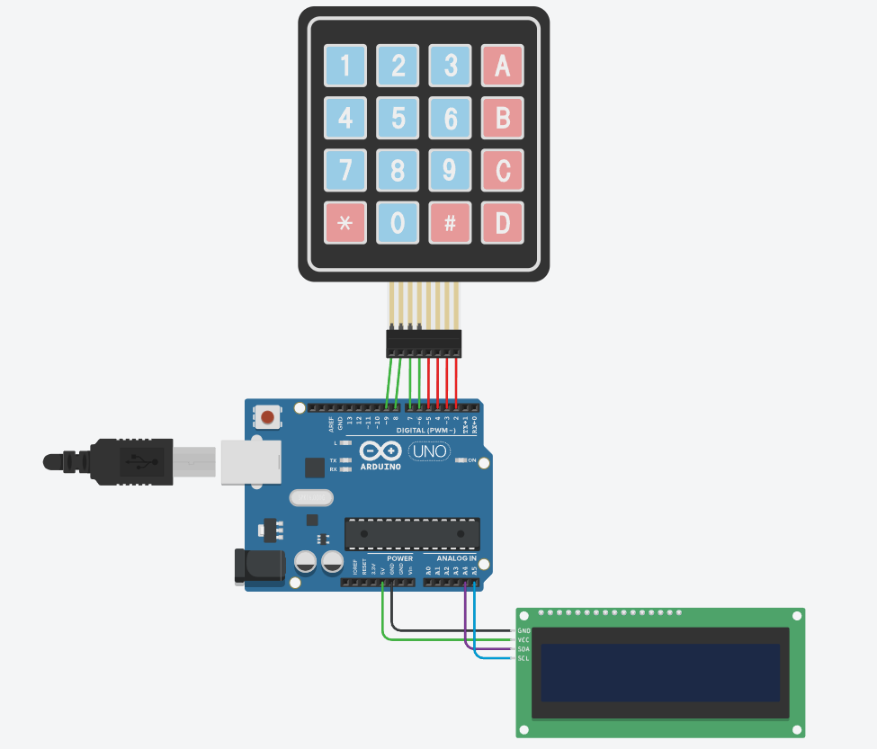

การต่อวงจร Arduino
วงจรประกอบด้วยอุปกรณ์เพียง 3 ชิ้น คือ Arduino UNO, Keypad 4×4 และจอ LCD 16×2 แบบ I2C

Keypad 4×4 → Arduino
| ขา Keypad | หน้าที่ | ขา Arduino | สาย |
|---|---|---|---|
| 1 | Row 1 (1 2 3 A) | D9 | |
| 2 | Row 2 (4 5 6 B) | D8 | |
| 3 | Row 3 (7 8 9 C) | D7 | |
| 4 | Row 4 (* 0 # D) | D6 | |
| 5 | Col 1 (1 4 7 *) | D5 | |
| 6 | Col 2 (2 5 8 0) | D4 | |
| 7 | Col 3 (3 6 9 #) | D3 | |
| 8 | Col 4 (A B C D) | D2 |
นับขา Keypad จากซ้ายไปขวาเมื่อหันหน้าปุ่มเข้าหาตัว
LCD I2C → Arduino
| ขา LCD | หน้าที่ | ขา Arduino | สาย |
|---|---|---|---|
| GND | กราวด์ | GND | |
| VCC | ไฟเลี้ยง 5V | 5V | |
| SDA | สายข้อมูล I2C | A4 | |
| SCL | สายสัญญาณนาฬิกา I2C | A5 |
ทดลอง: ปุ่มไหนต่อกับขาอะไร?
ชี้หรือแตะปุ่มบน Keypad เพื่อดูว่าปุ่มนั้นเชื่อมแถวและคอลัมน์ใด
เลือกปุ่มเพื่อดูรายละเอียด